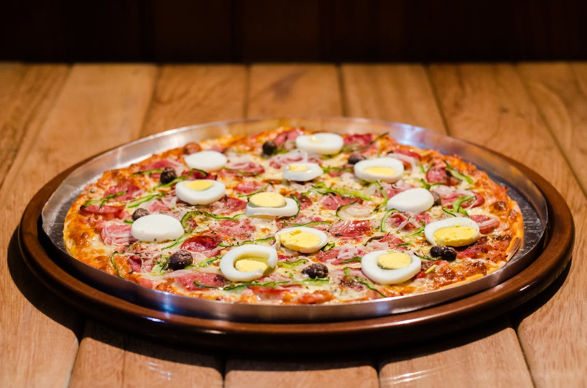

Pizza

Ingredients
Dough Ingredients
- 3cups flour
- 1/2cup extra flour for kneading
- 1pack or 2-1/4tsp yeast
- 1/2tbsp sugar
- 1/2tbsp salt
- 1-1/4cups tepid water
Sauce Ingredients
- 1tbsp dry basil
- 1tbsp dry oregano
- 1tbsp dry thyme
- 1tsp black pepper
- 1 tbsp minced garlic
- 1/4cup minced onion
- 2tbsp olive oil
- splash red wine vinegar
- splash worcestershire sauce
- 3+ pinches salt
- one small can tomato sauce or 2 tomatoes
Dough
- Proof yeast by mixing with sugar and 1/4 cup of tepid water. Let sit for 10 minutes, or until yeast begins to bubble
- Add 3 cups flour, salt, proofed yeast, and remainder of the water to a stand mixer; mix ingredients until completely incoporated
- On a lightly floured surface, knead dough until slightly firm and the dough bounces back from being impressed
- Place in a glass bowl lightly coated in olive oil, cover with plastic wrap and let rise for 2 hrs
Sauce
- In a small sauce pan, bloom oregano, thyme, basil, parsely, black pepper, and chopped onion in 2 tbsp of olive oil over medium-low heat
- Add in minced garlic, sautee
- Add in fresh tomatoes (or small tomato sauce), salt, simmer
- Finish with a slpash of red wine vinegar
and a splash of worcestershire sauce
The PIZZA
- Preheat oven to 475d F
- Punch out dough. Knead. Roll out to desired thickness and size, and place
strategically on baking sheet
- Spread sauce out over surface of dough, add fresh basil leafs, 1st layer of
mozzarella, then toppings (pepperoni and olives), a light 2nd layer of mozzarella, drizzle olive oil, sprinkle
sea salt evenly
- Bake for 17 min
- Let cool before cutting and serving